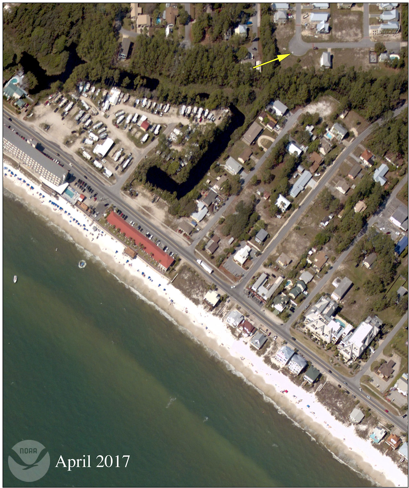

Track Volunteers
Log hours worked by community volunteers across multiple projects.
Track volunteer hours and donations to help communities recover from disasters and secure funding.


VolunteerTrack helps communities document volunteer work and donated materials after a disaster. This data is used to calculate the local match value needed to secure FEMA and state recovery funding.
Log hours worked by community volunteers across multiple projects.
Document donated materials and their estimated value for auditing.
Calculate total value and generate reports for grant applications.
Total value raised from volunteer hours and donations
Your time and contributions help our community recover faster. Submit your volunteer hours or donations today.
Get Started →